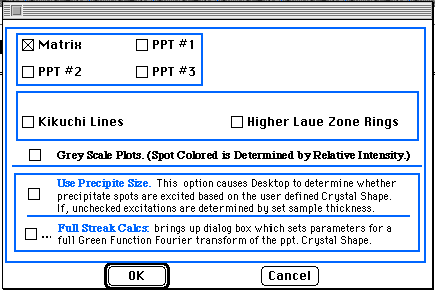

Desktop
Manual
Desktop
Manual
SAD:Tutorial:
Go to the File menu, select New, when the hierarchical menu comes up select
e-diffract, then from the next hierarchical menu, select the SAD Pattern...
option..i.Tutorial:SAD Pattern;
Note: An alternative method for moving through the New
hierarchical menus is to press cmd-N, this will bring up a selection dialog
box. By clicking on the appropriate choice, the desired window object will
eventually be reached.
A new window will be created and the
SAD Definition dialog box will appear. Click on the Matrix and the Ppt.
#1 check boxes to activate them. Click on the Beam Orientation button to
set the pole orientation to <111>. The click on the foil normal button
to set the foil normal to<111> and the foil thickness to 200. Press
<return> and the program will return to the main window and the desired
diffraction pattern will be plotted.

- Although Desktop Microscopist brings a great deal of flexibility to
the plotting of an appropriate diffraction pattern, the details of each
effect is best discussed in the sections on Menus
and Dialog Boxes. The
purpose of this section is to introduce three aspects of Desktop Microscopist.
The first is the importation of PICT files, the second is the use of PICT
files to obtain experimental diffraction data and the third is the use of
the search feature to locate potential matches for the experimental patterns.
- SAD:Tutorial:Importing;
In addition to the crystal library, the phase diagram and the application,
a PICT file labeled Sample 1 was also incorporated into the Desktop Microscopist
Folder. To access this file go to the File Menu and select the option
Place... An Open dialog box will appear. Open the file Sample
1 and an experimental diffraction pattern will appear. The diffraction
pattern may be positioned by simply clicking on it and moving the mouse.
Click on the main beam and move the imported diffraction pattern so that
it coincides with the main beam of the calculated pattern. Notice that the
calculated pattern is visible through the experimental diffraction pattern.
At this point, the user may wish to explore the difference between the
various Pict Transfer Modes, do this by going to the Edit Menu
and selecting the different Transfer Modes.
- It will be necessary to set the correct conversion factor for converting
the measured distances to reciprocal Angstroms. There are two methods to
accomplish this. The first technique is simply to input a camera length
which is appropriate for the final magnification. This is accomplished by
selecting the beam dialog box and changing the camera length.
- The second method is to use the experimental camera length for the
given instrument and then to set a magnification factor using options available
under the Exp. Info. Menu. For this example set the camera length
to 20 mm-Å, then go to the Exp. Info. Menu. and select the
Get d-space + Plane (Ring Method). Displayed is a ring centered around
the calculated main beam center. Moving the mouse causes this ring to expand
or contract. Set this ring so that it cuts through the closest g-vector.
Press <option> - M. This will bring up the Magnification
Dialog Box. Set the size to 26 mm and press the <return> key.
This sets the magnification for this picture. The distance that is set is
for the diameter of the ring.
- Note: If trouble is experienced in finding the mid-point of the
smallest g-vector, the sighting ability may be improved by playing with
the Convergence Angle found in the Beam Definition dialog box. This option
sets the size of the 'bulls eye' which tracks the mouse as it is moved around
the screen. Increasing the convergence angle will increase the size of the
bulls eye.
- Once the magnification has been set, the Ring may be used to read
off the d-spacing for the diffraction pattern. It should be possible to
read three or four d-spacings. Note how as the ring is pulled out, Miller
plane indices appear. These indices refer to the matrix crystal. Essentially,
Desktop Microscopist is comparing the current d-spacing with the calculated
d-spacings for the matrix crystal. If there is a match, Desktop Microscopist
will print this in the second ruler line. d-spacings may be compared to
any of the four crystals. To change crystals, go to the Set Reference
Crystal menu item under the Exp. Info. Menu. A hierarchical menu
item will allow selection of the crystal desired for comparison of experimental
values.
- The magnification may also be set by using the Set Magnification
- Line Method option. This item allows the drawing of one line. Magnification
is set by the length of the line. The line may be moved, and stretched
using standard Macintosh interface techniques. Use the <option>
- M command to bring up the Magnification dialog box.
Move On To Search/Matching Crystals
Author:James T. Stanley J.
Stanley
Desktop
Manual
Distributed By: Virtual
Labs
Last Updated:1/12/96 Sat, Apr 27, 1996